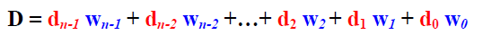

COE 202 notes - Airbus5717
Table of Contents
IMPORTANT NOTICE:
- THE LATEST PDF VERSION IS AVAILABLE click here
- Mobile screens may not display the web page properly due to alignment issues
- These notes are not enough for high grade (u need to practice and read the slides)
- These notes are according to Dr. Al-Suwaiyan’s order of sections
- source of the notes are on https://github.com/airbus5717/coe202
- This document is generated by orgmode with the emacs text editor
Videos
Dr. M. Mudawar
- YouTube playlist: click here
Dr. Aiman El-Maleh
- Microsoft stream videos: click here
Dr. Ali Al-Suwaiyan
- YouTube playlist: click here
| UNIT (For Suwaiyan) | YT video lecture |
|---|---|
| 1. Numbering systems | 1-5 |
| 2. Boolean algebra | 6-8 |
| 3. Std and canonical forms | 9-10 |
| 4. Verilog(1/3) | 11, 11.5 |
| 5. K-Map simplification | 12-15(till min 24) |
| 6. Other gate types | (contine)15-17 |
| 7. Combination Logic Design Procedure | 18 (till min 24) |
| 8. Arithmetic Circuits | (continue) 18-23 |
| 9. Functional blocks | 24-28 |
| 10. Verilog(2/3) | 29.1, 29.2, homework 1-2 |
| 11. Analysis & Design of Sequential Circuits | 30-34 |
| 12. Registers and counters | 35-38(till min 20) |
| 13. Verilog(3/3) | (contine)38-39 |
| 14. review | 40 |
Data Representation
Suwaiyan slides
Introduction
- computers represent data in binary numbers (1 and 0)
- all data must be represented in binary format
- data could be numbers, alphanumeric characters, images, sounds and many more.
- in general they are (numbers and characters)
Numbering Systems
- Numbering systems are characterized by their base number (also called radix or r for short)
- a number with base n will have digits from 0 to (n-1)
- for example base 2 includes : 0 and 1
the widely used numbering systems are:
Numbering system Base digits set Binary 2 0, 1 Octal 8 0, …, 7 Decimal 10 0, 1, …, 9 Hexadecimal 16 0, … 9, A, … F
Weighted Number Systems
- a number
Dconsists ofndigits with each digit having a particular position. - Every Digit has a fixed weight
 (from el-maleh slides)
- for example in base 10:
10 = 1 * 10 + 0 * 10
The Radix (Base)
the allowed set of digits are from 0 to r-1
for example in base 8: 0...7
- revise the (El-Maleh’s) slides (7-12)
Digit weight
example a number in base 8: 34556
- the most significant digit (MSD) is :
3 - the least significant digit (LSD) is :
6
Binary System
- the r =
2 - each digit is either 1 or 0
each bit represents a power of 2
2n Decimal value 20 1 21 2 22 4 23 8 24 16 25 32 26 64 27 128 28 256 29 512 210 1024 - example of conversion from binary to decimal binary number (101) = 1 * 22 + 0 * 21 + 1 * 20 = 5 in decimal
- see a YouTube video on conversion from decimal to binary click here
- another one on from binary to decimal click here
Octal System
- r = 8
- Octal digits = {0, 1, 2, 3, 4, 5, 6, 7}
- conversion videos click here for octal 2 decimal and click here for decimal 2 octal
Hexadecimal System
- r = 16
- Digits are 0..9 then A, B, C, D, E, F
- F is equavilant to 15 in decimal
- conversion videos click here for deci 2 hex and click here for hex 2 deci also click here for hex 2 binary and click here for binary 2 hex.
Integers in (Binary, Octal, Decimal and Hexadecimal)
| Binary(2) | Octal(8) | Decimal(10) | Hexadecimal(16) |
|---|---|---|---|
| 0000 | 0 | 0 | 0 |
| 0001 | 1 | 1 | 1 |
| 0010 | 2 | 2 | 2 |
| 0011 | 3 | 3 | 3 |
| 0100 | 4 | 4 | 4 |
| 0101 | 5 | 5 | 5 |
| 0110 | 6 | 6 | 6 |
| 0111 | 7 | 7 | 7 |
| 1000 | 10 | 8 | 8 |
| 1001 | 11 | 9 | 9 |
| 1010 | 12 | 10 | A |
| 1011 | 13 | 11 | B |
| 1100 | 14 | 12 | C |
| 1101 | 15 | 13 | D |
| 1110 | 16 | 14 | E |
| 1111 | 17 | 15 | F |
Binary coded decimal
- every number is represented as 4 bits
- there are different ways to represent it
- BCD8421 way is like for 1: 0001 and so forth
- XS-3 is like BCD8421 but add 3 to BCD8421
- example 103
- BCD8421: 0001 0000 0011
- XS-3: 0100 0011 0110
ASCII Chars
- each number/char/symbol is represented with a number from 0 to 127
- extended ascii has to 256 numbers
- ascii table link
Error detection by parity bit
- Sender tries to send data to reciever which is encodeded in binary
- Data could get corrupted during transmission
- so basically we construct a basic error checker that would help reduce errors (but not always the case)
Parity Bit
- We choose an even or odd parity bit
- Even parity: number of 1s is even
- add zero to keep the 1s even
- Odd parity: number of 1s is odd
- add zero to keep the 1s odd
check slides for example